Chapter 1 · Part 2 — By Moonlight
through the window.
It shone on the letter M that on the wooden floor.
It shone on the three M things that rested on the M: a from the time of the ninjas, a mango from the Amazon rain forest, and a from the Ice Age.
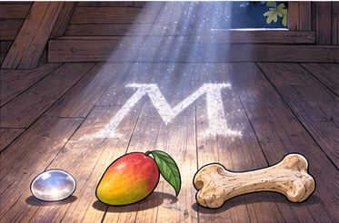
“We need just one more M thing,” said Annie, “to free Morgan from her .”
Squeak.
“Peanut!” said Annie.
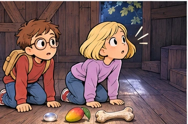
In the dim light, Jack saw a tiny mouse. She sat on an open book.
“You didn’t expect to see us this late, did you?” said Annie.
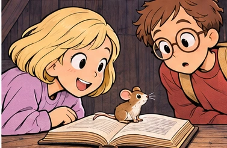
She picked up Peanut. And Jack picked up the open book.
“So where are we going this time?” Annie asked him.
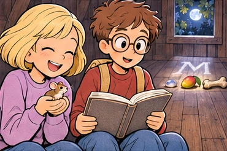
Jack held the book up to the .
“Uh-oh,” he said. “I knew we should have brought a flashlight. I can’t read a thing.”
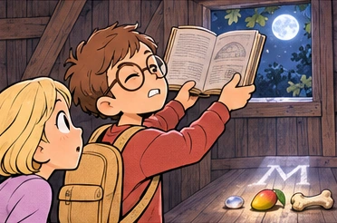
He could make out diagrams and shadowy pictures. But he couldn’t read a word.
“Look at the cover,” said Annie.
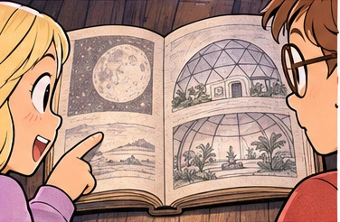
The letters were bigger on the cover. Jack at them.
“It’s called Hello, Moon,” he said.
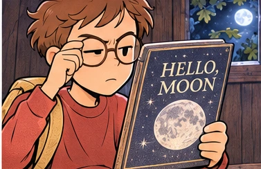
Annie gasped. “We’re going to the moon?”
“Of course not,” said Jack. “It’s to go to the moon without tons of .”
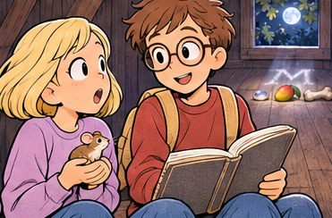
“Why?”
“There’s no air. We couldn’t breathe. Not only that, we’d boil to death if it was day and freeze to death if it was night.”
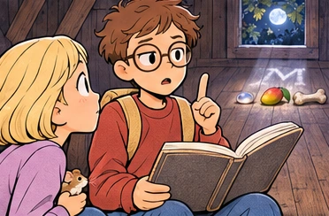
“Yikes,” said Annie. “So where do you think we are going?”
“Maybe a place where people train to be ,” said Jack.
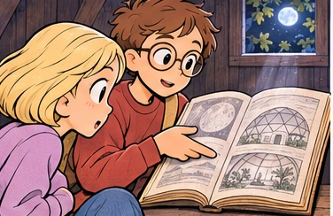
“That sounds neat,” said Annie.
“Yeah,” said Jack. He’d always wanted to meet and space scientists.
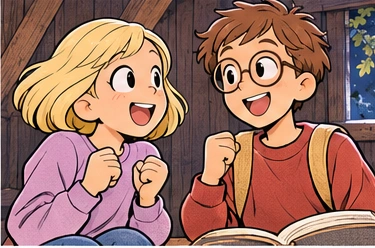
“So say the wish,” said Annie.
Jack opened the book again. He pointed to a picture of a -shaped structure.
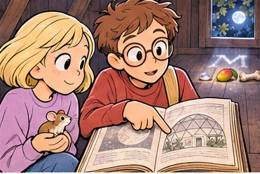
“I wish we could go there,” he said.
The wind started to blow.
The tree house started to spin.
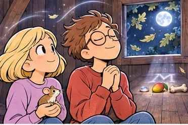
It spun faster and faster and faster.
Then everything was silent.
Absolutely silent. As quiet and still as silence could be.
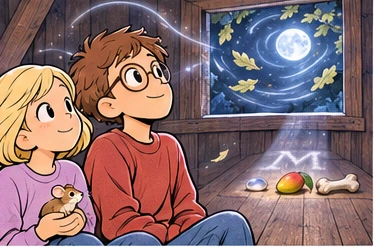